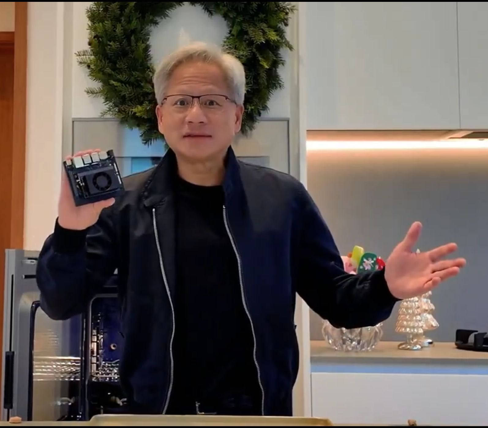

המהפכה בציוד הקצה: Nvidia שיחררה מחשב ב-249$ שעשוי לשנות את ה-AI לנצח: הכירו את ה-Jetson Nano – מכשיר זעיר שמריץ מודלי AI באופן מק
פורסם במקור ב LinkedIn
המהפכה בציוד הקצה: Nvidia שיחררה מחשב ב-249$ שעשוי לשנות את ה-AI לנצח: הכירו את ה-Jetson Nano – מכשיר זעיר שמריץ מודלי AI באופן מקומי, ולא פחות חשוב – הוא לא צריך את הענן.
מה זה אומר?
בעולם של היום, רוב ה-AI מתנהל במרכזי נתונים עצומים של ענקיות כמו OpenAI וגוגל.
בכל פעם שאתם משתמשים ב-ChatGPT, המידע עובר לשרתים, מעובד שם וחוזר אליכם.
אבל יש לזה מחיר:
📍 ריכוז כוח בידיים של מעט חברות.
📍 שליטה על מה אפשרי ב-AI, גישה לטכנולוגיה, המחיר, ואפילו מה קורה למידע שלכם.
כאן נכנס ה-Jetson Nano, ומשנה את חוקי המשחק:
הוא מריץ מודלי AI מקומיים, בלי צורך בחיבור לענן.
זה לא פחות ממהפכה טכנולוגית – מעבר מ-AI מרכזי ל-AI מבוזר בקצה.
מה זה אומר בפועל?
1️⃣ פרטיות וביטחון מידע
הנתונים נשארים על המכשיר שלכם. בלי להעביר מידע רגיש לענן.
2️⃣ מהירות ואמינות
בלי תלות בחיבור אינטרנט – ה-AI עובד מהר יותר ואמין יותר.
3️⃣ מהפכת המידע
בעולם של AI מבוזר, המידע הכי חשוב נאסף מקצה המכשירים – נתונים מהעולם האמיתי, בזמן אמת.
אז איפה אנחנו עומדים?
הקרב בין הענן לבין הקצה מתחיל עכשיו.
חברות הענן רוצות לשמור את הכוח אצלן.
אבל Nvidia, עם ה-Jetson Nano, מביאה את הכוח לידיים של מפתחים, יוצרים, ועסקים קטנים.
והשאלה הנשאלת כרגע היא האם העתיד של ה-AI צריך להיות בשליטה מרכזית, או בקצות האצבעות של כל אחד מאיתנו?
